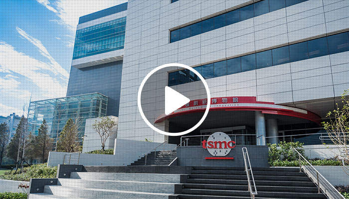

台積創新館開幕營運

位於台積公司全球總部，新竹科學園區晶圓十二廠一樓旁的台積創新館，於今(2) 日開幕營運。台積創新館歡迎您免費參觀。目前採預約參觀制，請您至台積創新館網頁「線上預約參觀」頁面進行預約。
台積創新館占地約一百七十餘坪，分為三個展區，分別是「創新無所不在」、「釋放創新動能」，以及「台積公司創辦人張忠謀博士」，透過互動技術、數位內容及歷史資料，讓參訪者瞭解積體電路在我們的生活中已經無所不在，而且不斷創新，讓我們的生活更豐富精彩，並且持續驅動科技進步的無限可能。同時，也說明台積公司對全球積體電路創新及台灣經濟發展的貢獻。
台積創新館，歡迎您一同前來探索積體電路的創新和其對你我生活的影響！
台積創新館住址及連絡方式
- 住址：新竹市科學園區力行七路1號
- 電話：(03) 5631968
- 電子郵件： service@tsmcmuseumofinnovation.com.tw
台積創新館開放時間
- 週一~週五: 09:00~17:00
- 週六: 10:00~17:00
- 休館時間: 週日、國定假日及館方公告之必要休館日
預約參觀注意事項
- 台積創新館目前採預約參觀制，恕無法接待隨到隨參觀訪客，不便之處請您見諒。
- 預約系統24小時開放，提供隔日起至次月底所有開館日及時段預約參觀服務，恕不受理當日預約。
如您有相關問題，建議您先至台積創新館網頁「常見問題」頁面先行了解。如有進一步問題，歡迎您於上班時間內來電洽詢台積創新館服務人員。